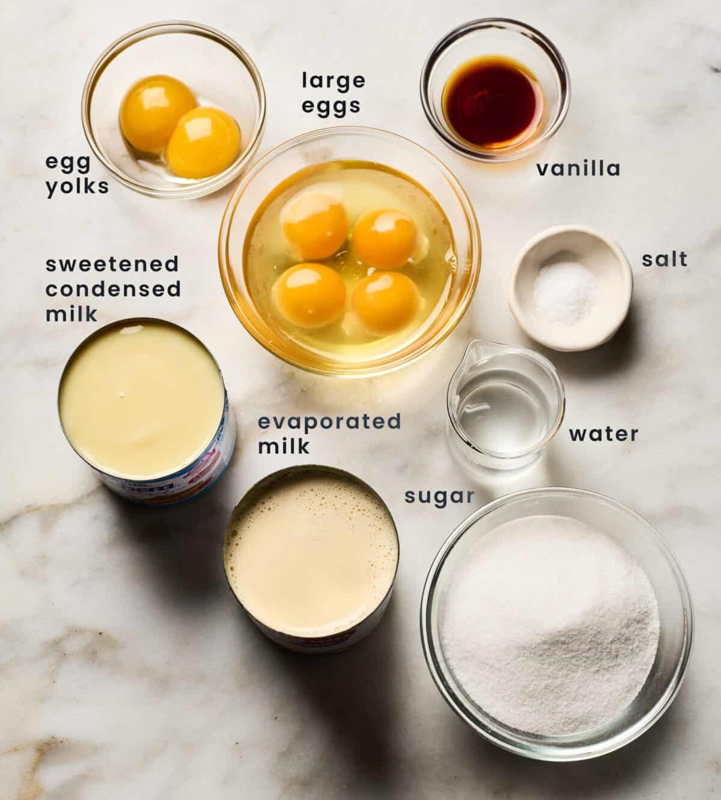
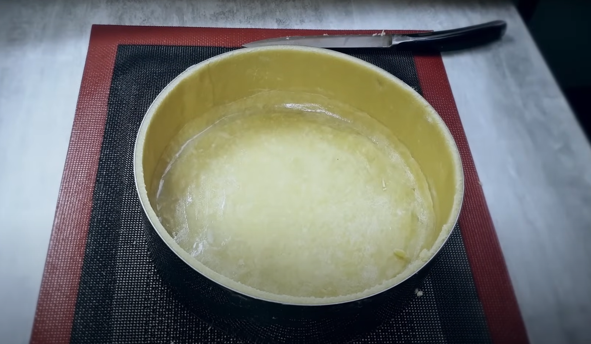

Flan Cake Recipe

Dough Ingredients
- 250g of flour 0000
- 180g of soft butter
- 5g of salt
- 5g of sugar
- 20g of egg yol
- 50g of milk
Dough Preparation
1. Sift the flour, salt, and sugar together. Add the butter, cut it into cubes, and combine
until
the mixture resembles coarse crumbs.
2. Mix the egg yolk with the milk and pour over the flour mixture. Stir until the dough
is
homogeneous.
3. Shape the dough into a disk, wrap it in plastic wrap, and refrigarate for 2 hours.
4. Flour your work surface. The dough should be firm. Roll it out to a thickness of 3 mm.
Using a
mold, cut out a disk for the base. Refrigerate the disk and gather the remaining dough
into
a
ball.
5. After refrigarating, roll the leftover dough into a strip 20 cm long and slightly
taller
than
the mold. Cut this strip into two equal pieces.
6. Butter the mold and press the two strips along the sides until they adhere. Moisten
the
edges
of the disk and place it on the base. Seal the edges with some water.
7. Refrigarate the assembled dough for 2 hours before using it.

Now that your dough is ready, it's time to make something tasty!
Dough Ingredients
- 250g of flour 0000
- 180g of soft butter
- 5g of salt
- 5g of sugar
- 20g of egg yol
- 50g of milk
Dough Preparation
1. Sift the flour, salt, and sugar together. Add the butter, cut it into cubes, and combine until the mixture resembles coarse crumbs.
2. Mix the egg yolk with the milk and pour over the flour mixture. Stir until the dough is homogeneous.
3. Shape the dough into a disk, wrap it in plastic wrap, and refrigarate for 2 hours.
4. Flour your work surface. The dough should be firm. Roll it out to a thickness of 3 mm. Using a mold, cut out a disk for the base. Refrigerate the disk and gather the remaining dough into a ball.
5. After refrigarating, roll the leftover dough into a strip 20 cm long and slightly taller than the mold. Cut this strip into two equal pieces.
6. Butter the mold and press the two strips along the sides until they adhere. Moisten the edges of the disk and place it on the base. Seal the edges with some water.
7. Refrigarate the assembled dough for 2 hours before using it.